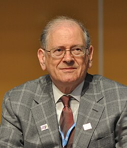
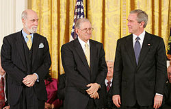

Robert Kahn | |
|---|---|
 Kahn in Geneva, May 2013 | |
| Born | Robert Elliot Kahn December 23, 1938 New York City, U.S. |
| Education | City College of New York (BS) Princeton University (MA, PhD) |
| Known for | TCP/IP |
| Spouse | Patrice Ann Lyons |
| Awards |
|
| Scientific career | |
| Fields | Telecommunications, networking |
| Workplaces | Bell Labs MIT BBN DARPA Corporation for National Research Initiatives |
| Thesis | Some problems in the sampling and modulation of signals (1964) |
| Bede Liu | |
Robert Elliot Kahn (born December 23, 1938) is an American electrical engineer who, along with Vint Cerf, first proposed the Transmission Control Protocol (TCP) and the Internet Protocol (IP), the fundamental communication protocols at the heart of the Internet.
In 2004, Kahn won the Turing Award with Vint Cerf for their work on TCP/IP.[1]
Robert Elliot Kahn was born in December 1938 in Brooklyn, New York City to parents Beatrice Pauline (née Tashker) and Lawrence Kahn in an Ashkenazi Jewish family.[2][3][4][5][6][7] Through his father, he is related to futurist Herman Kahn. After receiving a bachelor's in electrical engineering from the City College of New York in 1960, Kahn went on to Princeton University where he earned a M.A. in 1962 and Ph.D. in 1964, both in electrical engineering. At Princeton, he was advised by Bede Liu and completed a doctoral dissertation titled "Some problems in the sampling and modulation of signals."[8][9]
Kahn first worked at Bolt Beranek and Newman Inc., where he was the principal designer of the ARPANET.[10][11] In the fall of 1972, he demonstrated the ARPANET by connecting 20 different computers at the International Conference on Computer Communications (ICCC), "the watershed event that made people suddenly realize that packet switching was a real technology."[12]
In 1972, Kahn joined the Information Processing Techniques Office (IPTO) within DARPA. He then helped develop the TCP/IP protocols for connecting diverse computer networks. After he became director of IPTO, he started the United States government's billion dollar Strategic Computing Initiative, the largest computer research and development program ever undertaken by the U.S. federal government.[13]
After thirteen years with DARPA, Kahn left to found the Corporation for National Research Initiatives (CNRI) in 1986, and as of 2022 remains its chairman, CEO and president.[14]
While working on the SATNET satellite packet network project, he came up with the initial ideas for what later became the Transmission Control Protocol (TCP), which was intended as a replacement for an earlier network protocol, NCP, used in the ARPANET. TCP played a major role in forming the basis of internetworking, which would allow computers and networks all over the world to communicate with each other, regardless of what hardware or software the computers on each network used. To reach this goal, TCP was designed to have the following features:
Vint Cerf joined him on the project in the spring of 1973, and together they completed an early version of TCP. Later, the protocol was separated into two separate layers: host-to-host communication would be handled by TCP, with Internet Protocol (IP) handling internetwork communication.[15] The two together are usually referred to as TCP/IP, and form part of the basis for the modern Internet.
In 1992 he co-founded with Vint Cerf the Internet Society, to provide leadership in Internet related standards, education, and policy.
In 1981, Bob Kahn was elevated to the grade of IEEE fellow for original work in packet switching mobile radio telecommunications technology.[16] He was elected as a member to the National Academy of Engineering in 1987 for research contributions in computer networks and packet switching, and for creative management contributions to research efforts in computers and communications. He was elected a Founding Fellow of Association for the Advancement of Artificial Intelligence in 1990.[17]
He was awarded the SIGCOMM Award in 1993 for "visionary technical contributions and leadership in the development of information systems technology", and shared the 2004 Turing Award with Vint Cerf, for "pioneering work on internetworking, including .. the Internet's basic communications protocols .. and for inspired leadership in networking."

He is a recipient of the AFIPS Harry Goode Memorial Award, the Marconi Award, the ACM SIGCOMM Award, the President's Award from ACM, the IEEE Koji Kobayashi Computer and Communications Award, the IEEE Alexander Graham Bell Medal, the IEEE Third Millennium Medal, the ACM Software Systems Award, the Computerworld/Smithsonian Award, the ASIS Special Award and the Public Service Award from the Computing Research Board. He has twice received the Secretary of Defense Civilian Service Award.
He was awarded an honorary degree by the University of Pavia in 1998.
He was awarded the Stibitz-Wilson Award from the American Computer & Robotics Museum in 1999 for Pioneering the Internet through Major Design and Development Contributor to the Original ARPANET NCP Protocol and Co-Inventor of the Internet's TCP/IP Protocol.[18]
He is a recipient of the 1997 National Medal of Technology, the 2001 Charles Stark Draper Prize from the National Academy of Engineering, the 2002 Prince of Asturias Award, and the 2004 A. M. Turing Award from the Association for Computing Machinery.[19] Kahn received the 2003 Digital ID World award for the Digital Object Architecture as a significant contribution (technology, policy or social) to the digital identity industry.
In 2005 he was awarded the Townsend Harris Medal from the Alumni Association of the City College of New York, the Presidential Medal of Freedom, and the C & C Prize in Tokyo, Japan.
He was inducted into the National Inventors Hall of Fame in May 2006.
He was inducted as a Fellow of the Computer History Museum in 2006 "for pioneering technical contributions to internetworking and for leadership in the application of networks to scientific research."[20]
He was awarded the 2008 Japan Prize for his work in "Information Communication Theory and Technology" (together with Vinton Cerf).
The duo were also awarded with the Harold Pender Award, the highest honor awarded by the University of Pennsylvania School Engineering and Applied Sciences, in February 2010.
He has also served on the board of directors for Qualcomm.
In 2012, Kahn was inducted into the Internet Hall of Fame by the Internet Society.[22]
In 2013, Kahn was one of five Internet and Web pioneers awarded the inaugural Queen Elizabeth Prize for Engineering.[23]
Kahn received the 2024 IEEE Medal of Honor for "pioneering technical and leadership contributions in packet communication technologies and foundations of the Internet."[24]
Kahn has received honorary degrees from Princeton University, University of Pavia, ETH Zurich, University of Maryland, George Mason University, the University of Central Florida and the University of Pisa, and an honorary fellowship from University College, London.
In 2012, he was also recognized as honorary doctor of Saint Petersburg National Research University of Information Technologies, Mechanics and Optics.[25]
Kahn, the principal architect
For pioneering work on internetworking, including the design and implementation of the Internet's basic communications protocols, TCP/IP, and for inspired leadership in networking.
For leadership in the design of the Internet, strategic computing, digital libraries, digital object infrastructure and digital intellectual property protection technology.